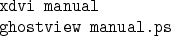
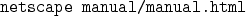

Next: 3.1.1 ParFlow Style Files
Up: 3. Documentation
Previous: 3. Documentation
Contents
Index
3.1 Writing Manuals
The manuals are written in LaTeX and converted to HTML
(via the package LaTeX2HTML) to be used online.
The source for these manuals is located in subdirectories of the
directory $PARFLOW_SRC/docs.
Various style files used to build the manuals are located
in the directory $PARFLOW_SRC/docs/lib.
Files ending in .sty are used in LaTeX to create printed
versions of the manuals, and files ending in .perl (these files
are perl scripts) are used by LaTeX2HTML to create online versions
of the manuals.
The files html.sty and html.perl
define various commands that are part of the LaTeX2HTML package.
With these commands, one can do things such as add hyperlinks to
the online document which are ignored by LaTeX when creating
the printed document.
The files parflow.sty and parflow.perl
define various commands and environments to be used by
developers when writing documentation.
They are discussed more fully in § 3.1.1.
To write and install manuals, do the following:
- Checkout and lock the manual files before editing.
- Modify or add new .tex files to the document.
Note: make sure that new files are added to the
Makefile.
- Build the online and printed versions, by typing
Note: the online version may take some time to build, so it may
be advisable to invoke the Makefile directly to build
just the printed version first.
- Check the printed version by doing either of the following:

Check the online version by doing

Note: when debugging the online version, it is a good idea to do a
build veryclean between builds; there are times when
LaTeX2HTML will hang if the directory has not been cleaned.
- If both the online and printed versions check out, type

This will first insure that both documents are built, then copy them
into the appropriate subdirectories of $PARFLOW_HELP.
The install also changes the group and permissions on the files so
that others may read them using pfhelp.
- Finally, use cvs commit to check the document source back
into the repository.
Subsections
Next: 3.1.1 ParFlow Style Files
Up: 3. Documentation
Previous: 3. Documentation
Contents
Index
Steve Smith
2008-06-02